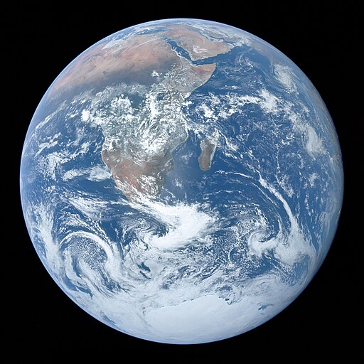

World Map
ESRI World Imagery 연결 중...
링크가 복사되었습니다.
위치 확인 중...
✕
0건
World Map
전세계 위치
위도
—
경도
—
고도
—
zoom
—
지도 스타일
위성 / 일반 모드를 전환할 수 있습니다.
위성
일반 지도
즐겨찾기 · 위치 저장
현재 보고 있는 위치를 저장하거나, 위도/경도 또는 우편번호로 직접 추가할 수 있습니다.
현재 위치 저장
직접 추가/수정
